الخطوات الأولى مع TypeScript
بعد المقدمة الموجزة عن المبادئ الرئيسية لـ TypeScript، أصبحنا الآن مستعدين لبدء رحلتنا نحو أن نصبح مطوّري FullStack بلغة TypeScript. وبدلاً من تقديم مقدمة شاملة عن جميع جوانب TypeScript، سنركّز في هذا الجزء على أكثر المشكلات شيوعاً التي تظهر عند تطوير واجهة خلفية بـ Express أو واجهة أمامية بـ React باستخدام TypeScript. وإلى جانب ميزات اللغة، سنولي أيضاً اهتماماً قوياً بالأدوات.
إعداد الأمور
منذ الإصدار 22.6 الذي صدر في أغسطس 2024، أصبح Node.js قادراً على تشغيل شيفرة TypeScript. في الواقع، لا يفهم Node لغة TypeScript، بل يحذف فقط تعليقات الأنواع ويشغّل شيفرة JavaScript المتبقية.
لا يجري Node.js فحصاً للأنواع، لذا لن تحصل إلا على مجموعة صغيرة من مزايا TypeScript بشكل جاهز. وللحصول على تجربة TypeScript الكاملة — فحص الأنواع والترجمة وأدوات أغنى — سنحتاج أيضاً إلى تثبيت حزمة npm المسماة TypeScript، التي توفّر المترجم (tsc) وخدمات اللغة.
كما نتذكّر من الجزء 3، يُنشأ مشروع npm بتشغيل الأمر npm init في دليل فارغ. ثم يمكننا تثبيت الاعتمادية بتشغيل
npm install --save-dev typescript
لنُعِد أيضاً scripts داخل الملف package.json:
{
// ...
"type": "module", // HIGHLIGHT LINE
"scripts": {
"tsc": "tsc --noEmit" // HIGHLIGHT LINE
},
"devDependencies": {
"typescript": "^5.9.3"
}
}
يمكننا الآن استخدام السكربت لفحص أنواع ملف TypeScript:
npm run tsc file.ts
يخبر الخيار --noEmit مترجم TypeScript بألا يولّد مخرجات JavaScript. فهو يشغّل فحص الأنواع فقط، دون توليد ملف مترجم.
لاحظ أننا عرّفنا "type": "module" الذي يخبر Node.js بمعاملة الملفات في هذه الحزمة كوحدات ES (ESM) بدلاً من وحدات CommonJS، ما يعني أنه يمكننا استخدام صيغة import/export بدلاً من require، وهي الطريقة المفضّلة في TypeScript.
لنضف ملف إعدادات tsconfig.json إلى المشروع بالمحتوى التالي:
{
"compilerOptions":{
"noImplicitAny": false,
"noEmit": true
}
}
يُستخدم ملف tsconfig.json لتحديد كيف ينبغي لمترجم TypeScript أن يفسّر الشيفرة، ومدى صرامة عمل المترجم، والملفات التي يجب مراقبتها أو تجاهلها، وأمور أخرى كثيرة. في الوقت الحالي، سنعطّل فقط خيار المترجم noImplicitAny، بحيث لا يُشترط كتابة أنواع لجميع المتغيرات المستخدمة. عرّفنا أيضاً "noEmit": true لأننا سنستخدم مترجم TypeScript للفحص فقط.
يمكننا الآن حذف المعامل --noEmit من سكربت npm:
{<br> // ...<br> "scripts": {<br> "tsc": "tsc" // HIGHLIGHT LINE<br> },<br> // ...<br>}
ملاحظة حول أسلوب كتابة الشيفرة
JavaScript لغة متسامحة جداً بطبيعتها، ويمكن غالباً إنجاز الأمور بطرق مختلفة متعددة. على سبيل المثال، لدينا الدوال المسماة مقابل الدوال المجهولة، واستخدام const وlet أو var، والاستخدام الاختياري لـالفواصل المنقوطة. يختلف هذا الجزء من المقرر عن بقية الأجزاء باستخدامه الفواصل المنقوطة. وهو ليس نمطاً خاصاً بـ TypeScript بل قرار عام في أسلوب كتابة الشيفرة يُتخذ عند إنشاء أي نوع من مشاريع JavaScript. وعادة ما يكون قرار استخدامها من عدمه بيد المبرمج، ولكن بما أنه يُتوقع من المرء أن يكيّف عاداته البرمجية مع قاعدة الشيفرة القائمة، فمن المتوقع أن تستخدم الفواصل المنقوطة وأن تتكيّف مع أسلوب كتابة الشيفرة في تمارين هذا الجزء. يحتوي هذا الجزء أيضاً على بعض الفروق الأخرى في أسلوب كتابة الشيفرة مقارنة ببقية المقرر، مثل اصطلاحات تسمية الأدلة.
لنبدأ بإنشاء مضاعِف بسيط في الملف multiplier.ts. يبدو تماماً كما سيكون في JavaScript.
const multiplicator = (a, b, printText) => {
console.log(printText, a * b);
}
multiplicator(2, 4, 'Multiplied numbers 2 and 4, the result is:');
كما ترى، هذه لا تزال شيفرة JavaScript أساسية عادية دون أي ميزات إضافية من TS. وعندما نستخدم مترجم TypeScript لفحص الأنواع بالأمر npm run tsc multiplier.ts لا تظهر أي شكاوى. لذا نعرف أن الشيفرة آمنة الأنواع، ويمكننا تشغيلها بثقة بالأمر node multiplier.ts.
لتسريع الأمور، لننشئ سكربتاً يقوم أولاً بفحص الأنواع ثم يشغّل الشيفرة إذا نجحت الفحوصات.
{
// ..
"scripts": {
"tsc": "tsc",
"multiply": "tsc && <span style="background-color: rgba(30, 30, 30, 0.2); font-family: inherit; text-align: initial;">node multiplier.ts</span>" // HIGHLIGHT LINE
},
// ..
}
فالآن يكفي npm run multiply لفحص الأنواع وتشغيل الشيفرة.
ماذا يحدث إذا انتهى بنا الأمر بتمرير أنواع خاطئة من المعاملات إلى الدالة multiplicator؟
لنجرّب ذلك!
const multiplicator = (a, b, printText) => {
console.log(printText, a * b);
}
multiplicator('how about a string?', 4, 'Multiplied a string and 4, the result is:');
الآن عندما نشغّل الشيفرة، يكون الناتج: Multiplied a string and 4, the result is: NaN.
ألن يكون جميلاً لو استطاعت اللغة نفسها أن تمنعنا من الانتهاء في مواقف كهذه؟ هنا نرى أولى مزايا TypeScript. لنضف أنواعاً إلى المعاملات ونرَ إلى أين يأخذنا ذلك.
تدعم TypeScript أصلاً أنواعاً متعددة منها number وstring وArray. اطّلع على القائمة الشاملة هنا. ويمكن أيضاً إنشاء أنواع مخصّصة أكثر تعقيداً.
المعاملان الأولان في دالتنا من النوع number والأخير من النوع string، وكلا النوعين من الأنواع الأولية:
const multiplicator = (a: number, b: number, printText: string) => { // HIGHLIGHT LINE
console.log(printText, a * b);
}
multiplicator('how about a string?', 4, 'Multiplied a string and 4, the result is:');
الآن لم تعد الشيفرة صالحة في TypeScript. وعندما نحاول تشغيل الشيفرة، نلاحظ أنها لا تُترجم:
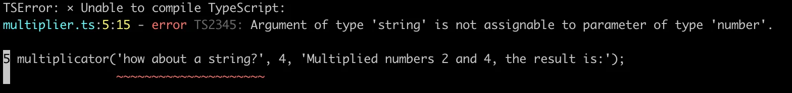
من أفضل ما في دعم TypeScript في المحرّر أنك لا تحتاج بالضرورة إلى تشغيل الشيفرة لترى المشكلات. فـ VSCode فعّال لدرجة أنه يخبرك فوراً عندما تحاول استخدام نوع غير صحيح:
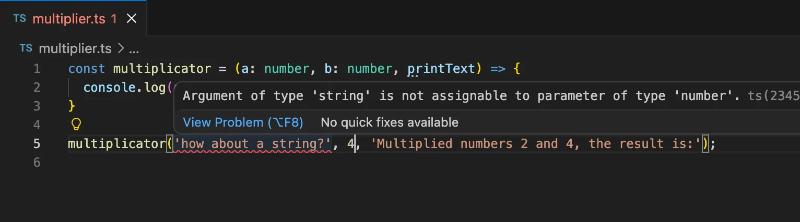
إنشاء أنواعك الأولى
لنوسّع مضاعِفنا ليصبح آلة حاسبة أكثر تنوعاً تدعم أيضاً الجمع والقسمة. ينبغي أن تقبل الآلة الحاسبة ثلاث وسائط: عددين والعملية، إما multiply أو add أو divide، التي تخبرها ما تفعله بالعددين.
في JavaScript، ستتطلب الشيفرة تحققاً إضافياً للتأكد من أن الوسيط الأخير نص بالفعل. تقدّم TypeScript طريقة لتعريف أنواع محددة للمدخلات، تصف بدقة نوع المدخل المقبول. علاوة على ذلك، تستطيع TypeScript أيضاً عرض معلومات القيم المقبولة على مستوى المحرّر نفسه.
يمكننا إنشاء نوع باستخدام الكلمة المفتاحية الأصلية في TypeScript وهي type. لنصف نوعنا Operation:
type Operation = 'multiply' | 'add' | 'divide';
الآن لا يقبل نوع Operation سوى ثلاثة أنواع من القيم؛ تحديداً النصوص الثلاثة التي أردناها. وباستخدام المعامل OR وهو | يمكننا تعريف متغير ليقبل قيماً متعددة عبر إنشاء نوع اتحادي. في هذه الحالة، استخدمنا نصوصاً محددة (تُسمى بمصطلحات تقنية أنواع النصوص الحرفية)، لكن مع الأنواع الاتحادية يمكنك أيضاً جعل المترجم يقبل مثلاً النص والعدد معاً: string | number.
تعريف الكلمة المفتاحية type اسم جديد لنوع: اسم مستعار للنوع. وبما أن النوع المعرّف هو اتحاد لثلاث قيم محتملة، فمن المفيد إعطاؤه اسماً مستعاراً ذا اسم معبّر.
لنلقِ نظرة على آلتنا الحاسبة الآن:
type Operation = 'multiply' | 'add' | 'divide';
const calculator = (a: number, b: number, op: Operation) => {
if (op === 'multiply') {
return a * b;
} else if (op === 'add') {
return a + b;
} else if (op === 'divide') {
if (b === 0) return 'can\'t divide by 0!';
return a / b;
}
}
الآن، عندما نمرّر المؤشر فوق نوع Operation في دالة calculator، يمكننا أن نرى فوراً اقتراحات حول ما يمكن فعله به:
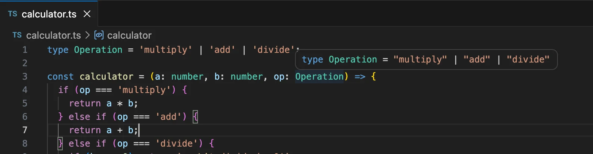
وإذا حاولنا استخدام قيمة ليست ضمن نوع Operation، نحصل على إشارة التحذير الحمراء المألوفة ومعلومات إضافية من محرّرنا:
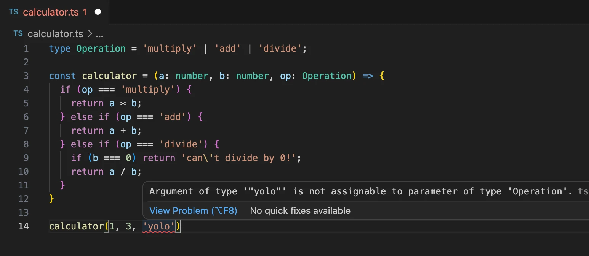
هذا جيد جداً بالفعل، لكن هناك أمر لم نلمسه بعد وهو كتابة نوع القيمة المُعادة من الدالة. عادةً، تريد معرفة ما تُعيده الدالة، وسيكون من الجميل ضمان أنها تُعيد ما تدّعي أنها تُعيده. لنضف نوع القيمة المُعادة number إلى دالة calculator:
type Operation = 'multiply' | 'add' | 'divide';
const calculator = (a: number, b: number, op: Operation): number => { // HIGHLIGHT LINE
if (op === 'multiply') {
return a * b;
} else if (op === 'add') {
return a + b;
} else if (op === 'divide') {
if (b === 0) return 'this cannot be done';
return a / b;
}
}
يشتكي المترجم فوراً لأن الدالة تُعيد نصاً في إحدى الحالات. وهناك بضع طرق لإصلاح ذلك:
يمكننا توسيع نوع القيمة المُعادة ليسمح بقيم نصية، هكذا:
const calculator = (a: number, b: number, op: Operation): number | string => {
// ...
}
أو يمكننا إنشاء نوع للقيمة المُعادة يشمل كلا النوعين المحتملين، تماماً مثل نوع Operation لدينا:
type Result = string | number;
const calculator = (a: number, b: number, op: Operation): Result => {
// ...
}
لكن السؤال الآن هو: هل من المقبول حقاً أن تُعيد الدالة نصاً؟
عندما يمكن أن تنتهي شيفرتك في موقف تُقسم فيه قيمة على 0، فقد حدث خطأ فادح على الأرجح، وينبغي رمي خطأ ومعالجته حيث استُدعيت الدالة. وعندما تقرّر إعادة قيم لم تكن تتوقعها أصلاً، فإن التحذيرات التي تراها من TypeScript تمنعك من اتخاذ قرارات متعجلة وتساعدك على إبقاء شيفرتك تعمل كما هو متوقع.
هناك أمر آخر ينبغي مراعاته وهو أنه حتى مع تعريفنا أنواعاً لمعاملاتنا، فإن شيفرة JavaScript المولّدة والمستخدمة وقت التشغيل لا تحتوي على فحوصات الأنواع. لذا إذا كانت قيمة المعامل Operation مثلاً تأتي من واجهة خارجية، فلا يوجد ضمان مؤكد أنها ستكون إحدى القيم المسموح بها. لذلك، لا يزال من الأفضل تضمين معالجة الأخطاء والاستعداد لحدوث غير المتوقع. في هذه الحالة، عندما تكون هناك قيم مقبولة متعددة محتملة وينبغي أن تؤدي كل القيم غير المتوقعة إلى خطأ، تناسبنا عبارة switch...case أكثر من if...else في شيفرتنا.
ينبغي أن تبدو شيفرة آلتنا الحاسبة شيئاً كهذا:
type Operation = 'multiply' | 'add' | 'divide';
const calculator = (a: number, b: number, op: Operation) : number => { // HIGHLIGHT LINE
switch(op) {
case 'multiply':
return a * b;
case 'divide':
if (b === 0) throw new Error('Can\'t divide by 0!'); // HIGHLIGHT LINE
return a / b;
case 'add':
return a + b;
default:
throw new Error('Operation is not multiply, add or divide!'); // HIGHLIGHT LINE
}
}
try {
console.log(calculator(1, 5 , 'divide'));
} catch (error: unknown) {
let errorMessage = 'Something went wrong: '
if (error instanceof Error) {
errorMessage += error.message;
}
console.log(errorMessage);
}
تضييق الأنواع
النوع الافتراضي لمعامل كتلة catch وهو error هو unknown. وunknown نوع من أنواع القمة الذي أُدخل في الإصدار 3 من TypeScript ليكون النظير الآمن الأنواع لـany. أي شيء يمكن إسناده إلى unknown، لكن unknown لا يمكن إسناده إلى أي شيء سوى نفسه وany دون تأكيد نوع أو تضييق نوع قائم على تدفق التحكم. وبالمثل، لا يُسمح بأي عمليات على قيمة من نوع unknown دون تأكيدها أو تضييقها أولاً إلى نوع أكثر تحديداً.
كلا السببين المحتملين للاستثناء (معامل خاطئ أو قسمة على صفر) سيرمي كائن Error مع رسالة خطأ يطبعها برنامجنا للمستخدم.
لو كانت شيفرتنا JavaScript، لأمكننا طباعة رسالة الخطأ بمجرد الإشارة إلى الحقل message في الكائن error كما يلي:
try {
console.log(calculator(1, 5 , 'divide'));
} catch (error) {
console.log('Something went wrong: ' + error.message); // HIGHLIGHT LINE
}
بما أن النوع الافتراضي للكائن error في TypeScript هو unknown، علينا أن نضيّق النوع للوصول إلى الحقل:
try {
console.log(calculator(1, 5 , 'divide'));
} catch (error: unknown) {
let errorMessage = 'Something went wrong: '
// هنا لا يمكننا استخدام error.message
// BEGIN HIGHLIGHT
if (error instanceof Error) {
// تم تضييق النوع ويمكننا الإشارة إلى error.message
// END HIGHLIGHT
errorMessage += error.message;
}
// هنا لا يمكننا استخدام error.message // HIGHLIGHT LINE
console.log(errorMessage);
}
هنا، أُجري التضييق باستخدام حارس النوع instanceof، وهو مجرد واحدة من طرق كثيرة لتضييق نوع. وسنرى طرقاً أخرى كثيرة لاحقاً في هذا الجزء.
الوصول إلى معاملات سطر الأوامر
البرامج التي كتبناها جيدة، لكن سيكون من الأفضل بالتأكيد لو استطعنا استخدام معاملات سطر الأوامر بدلاً من الاضطرار دائماً إلى تغيير الشيفرة لحساب أشياء مختلفة.
لنجرّب ذلك، كما نفعل في تطبيق Node عادي، عبر الوصول إلى process.argv. ومع ذلك، هناك شيء غير صحيح:
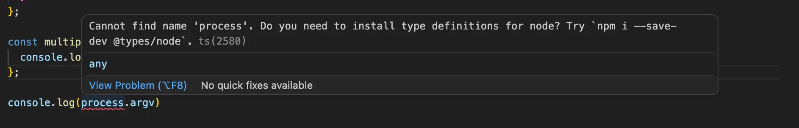
تعطينا رسالة الخطأ تلميحاً عن كيفية إصلاح المشكلة:
npm install --save-dev @types/node
عند تثبيت الحزمة @types/node، لا يشتكي المترجم من المتغير process. لاحظ أنه لا حاجة لاستيراد الأنواع في الشيفرة، فمجرد تثبيت الحزمة كافٍ!
حول @types/{npm_package}
ثبّتنا للتو حزمة npm المسماة @types/node للتخلص من خطأ في الأنواع. فما هي هذه الحزمة في الواقع؟
تتوقع TypeScript وجود أنواع لكل شيفرة تستخدمها، بما في ذلك المكتبات الخارجية، حتى تستطيع توفير IntelliSense ودعم المحرّر وفحوصات وقت الترجمة. كثير من المكتبات لا تتضمن أنواعها الخاصة. وعندما يحدث ذلك، تُنشر تعريفات الأنواع التي يصونها المجتمع من DefinitelyTyped على npm تحت منظمة @types.
ثبّت حزم @types فقط إذا كانت المكتبة لا تتضمن أنواعاً بالفعل. يمكنك التحقق من توثيق الحزمة أو من حقل types في package.json. ثبّت هذه الحزم كـdevDependencies، لأنها لا تُحتاج إلا أثناء التطوير والبناء، وأبقِ إصداراتها متوافقة مع المكتبة لتجنب عدم التطابق.
على سبيل المثال، تضيف @types/express أنواعاً لـ Request وResponse وRouter والوسيط، ما يحسّن الأمان وسهولة الاستخدام عند بناء المسارات. وبالمثل، يمكنك تثبيت أنواع لمكتبات أخرى تفتقر إلى أنواع مدمجة، مثل @types/react و@types/lodash, أو @types/mongoose.
خلف هذه الحزم يقف مشروع DefinitelyTyped ، وهو مجتمع نشط يصون ويحدّث تعريفات الأنواع لعدد هائل من مكتبات npm. وفي معظم الحالات، يمكنك الاعتماد على هذه بدلاً من كتابة تعريفاتك الخاصة. والخلاصة: فضّل الأنواع المدمجة عند توفرها؛ وإلا فثبّت حزم @types المناسبة كـ devDependencies وأبقِها متزامنة مع إصدارات مكتباتك.
تحسين المشروع
يمكننا جعل multiplier يعمل بمعاملات سطر الأوامر كما يلي:
const multiplicator = (a: number, b: number, printText: string) => {
console.log(printText, a * b);
}
// BEGIN HIGHLIGHT
// تبدأ معاملات سطر الأوامر من process.argv[2]
const a: number = Number(process.argv[2])
const b: number = Number(process.argv[3])
multiplicator(a, b, `Multiplied ${a} and ${b}, the result is:`);
// END HIGHLIGHT
ويمكننا تشغيله بـ:
npm run multiply 5 2
إذا شُغّل البرنامج بمعاملات ليست من النوع الصحيح، مثل:
npm run multiply 5 lol
فإنه "يعمل" لكنه يعطينا الجواب:
Multiplied 5 and NaN, the result is: NaN
والسبب في ذلك أن Number('lol') تُعيد NaN، وهو في الواقع من النوع number، لذا لا تملك TypeScript أي قدرة على إنقاذنا من موقف كهذا.
لمنع هذا النوع من السلوك، علينا التحقق من البيانات المعطاة لنا من سطر الأوامر.
تبدو النسخة المحسّنة من المضاعِف هكذا:
interface MultiplyValues {
value1: number;
value2: number;
}
const parseArguments = (args: string[]): MultiplyValues => {
if (args.length < 4) throw new Error('Not enough arguments');
if (args.length > 4) throw new Error('Too many arguments');
if (!isNaN(Number(args[2])) && !isNaN(Number(args[3]))) {
return {
value1: Number(args[2]),
value2: Number(args[3])
}
} else {
throw new Error('Provided values were not numbers!');
}
}
const multiplicator = (a: number, b: number, printText: string) => {
console.log(printText, a * b);
}
try {
const { value1, value2 } = parseArguments(process.argv);
multiplicator(value1, value2, `Multiplied ${value1} and ${value2}, the result is:`);
} catch (error: unknown) {
let errorMessage = 'Something bad happened.'
if (error instanceof Error) {
errorMessage += ' Error: ' + error.message;
}
console.log(errorMessage);
}
عندما نشغّل البرنامج الآن:
npm run multiply 1 lol
نحصل على رسالة خطأ مناسبة:
Something bad happened. Error: Provided values were not numbers!
هناك الكثير مما يجري في الشيفرة. وأهم إضافة هي الدالة parseArguments التي تضمن أن المعاملات المعطاة إلى multiplicator من النوع الصحيح. وإلا، يُرمى استثناء برسالة خطأ وصفية.
في تعريف الدالة بضعة أمور مثيرة للاهتمام:
const parseArguments = (args: string[]): MultiplyValues => {
// ...
}
أولاً، المعامل args هو مصفوفة من النصوص.
القيمة المُعادة من الدالة من النوع MultiplyValues، المعرّف كما يلي:
interface MultiplyValues {
value1: number;
value2: number;
}
يستخدم التعريف الكلمة المفتاحية Interface في TypeScript، وهي إحدى طرق تعريف "الشكل" الذي ينبغي أن يكون عليه الكائن. في حالتنا، من الواضح تماماً أن القيمة المُعادة ينبغي أن تكون كائناً بخاصيتين هما value1 وvalue2، وينبغي أن يكون كلاهما من النوع number.
صيغة المصفوفات البديلة
لاحظ أن هناك أيضاً صيغة بديلة لـالمصفوفات في TypeScript. فبدلاً من كتابة
let values: number[];
يمكننا استخدام "صيغة الأنواع العامة" وكتابة
let values: Array<number>;
في هذا المقرر، سنتبع غالباً الاصطلاح الذي تفرضه قاعدة Eslint المسماة array-simple التي تقترح كتابة المصفوفات البسيطة بصيغة [] واستخدام صيغة <> للمصفوفات الأكثر تعقيداً، انظر هنا للأمثلة.
1. مؤشر كتلة الجسم
2. حاسبة التمارين
3. سطر الأوامر
إضافة Express إلى المزيج
نحن الآن في وضع جيد جداً. مشروعنا جاهز، ولدينا فيه آلتان حاسبتان قابلتان للتنفيذ. ومع ذلك، بما أننا نهدف إلى تعلّم تطوير الويب المتكامل، فقد حان الوقت للبدء بالعمل مع بعض طلبات HTTP.
قبل ذلك، لنوسّع قليلاً إعداداتنا في الملف tsconfig.json، الذي لم يحتوِ حتى الآن سوى على قاعدة tsconfig واحدة هي noImplicitAny. غيّر الملف ليكون بالمحتوى التالي:
{
"compilerOptions": {
"target": "esnext",
"noEmit": true,
// BEGIN HIGHLIGHT
"noUnusedLocals": true,
"noUnusedParameters": true,
"noImplicitReturns": true,
"noFallthroughCasesInSwitch": true,
"module": "nodenext",
"esModuleInterop": true,
"allowImportingTsExtensions": true
// END HIGHLIGHT
}
}
لا تقلق كثيراً بعد بشأن compilerOptions، فسيخضع لفحص أدق لاحقاً.
إذا أردت، يمكنك العثور على شروحات لكل إعداد من توثيق TypeScript، أو من صفحة tsconfig المفيدة جداً، أو من تعريف مخطط tsconfig.
لنبدأ البرمجة بتثبيت Express:
npm install express
ثم نضيف سكربت start إلى package.json:
{
// ...
"scripts": {
"tsc": "tsc",
"multiply": "tsc && node multiplier.ts",
"start": "tsc && node index.ts" // HIGHLIGHT LINE
},
// ..
}
الآن يمكننا إنشاء الملف index.ts وكتابة نقطة نهاية HTTP GET المسماة ping فيه:
const express = require('express');
const app = express();
app.get('/ping', (req, res) => {
res.send('pong');
});
const PORT = 3003;
app.listen(PORT, () => {
console.log(`Server running on port ${PORT}`);
});
يبدو كل شيء آخر على ما يرام، لكن كما تتوقع، يحتاج المعاملان req وres في app.get إلى كتابة أنواع.
إذا نظرت بعناية، ستجد أن VSCode يشتكي أيضاً من استيراد Express. يمكنك رؤية سطر أصفر قصير من النقاط تحت require. لنمرّر المؤشر فوق المشكلة:
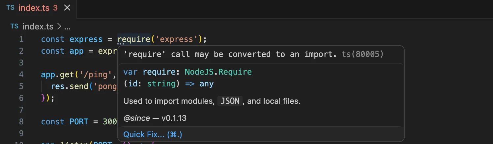
الشكوى هي أن استدعاء 'require' يمكن تحويله إلى import. لنتبع النصيحة ونكتب الاستيراد كما يلي:
import express from 'express';
يمنحك VSCode إمكانية إصلاح المشكلات تلقائياً بالنقر على زر Quick Fix.... أبقِ عينيك مفتوحتين على هذه المساعدات/الإصلاحات السريعة؛ فالاستماع إلى محرّرك يجعل شيفرتك عادةً أفضل وأسهل قراءة. ويمكن أن توفّر الإصلاحات التلقائية للمشكلات وقتاً كبيراً أيضاً.
صيغة الاستيراد هي الخيار الأمثل مع TypeScript، لذا سنلتزم بها من هذه النقطة فصاعداً!
الآن نصطدم بمشكلة أخرى: يشتكي المترجم من عبارة الاستيراد. ومرة أخرى، يكون المحرّر أفضل صديق لنا عند محاولة معرفة ماهية المشكلة:
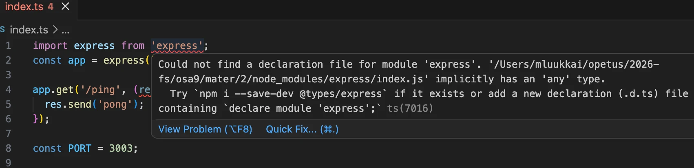
سبب الخطأ هو أننا لم نثبّت أنواعاً لـExpress. لنفعل ما يقترحه الاقتراح ونشغّل:
npm install --save-dev @types/express
لا ينبغي أن تبقى أي أخطاء. لاحظ أنك قد تحتاج إلى إعادة فتح الملف في المحرّر ليتزامن VS Code.
هناك مشكلة أخرى في الشيفرة:
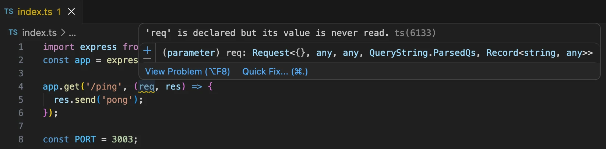
وذلك لأننا منعنا المعاملات غير المستخدمة في ملف tsconfig.json:
{
"compilerOptions": {
"target": "esnext",
"noEmit": true,
"noUnusedLocals": true,
"noUnusedParameters": true, // HIGHLIGHT LINE
"noImplicitReturns": true,
"noFallthroughCasesInSwitch": true,
"module": "nodenext",
"esModuleInterop": true,
"allowImportingTsExtensions": true
}
}
قد يخلق هذا الإعداد مشكلات إذا كانت لديك دوال معرّفة مسبقاً على مستوى المكتبة تتطلب تعريف متغير حتى لو لم يُستخدم إطلاقاً، كما هو الحال هنا. لحسن الحظ، هذه المشكلة محلولة بالفعل على مستوى الإعدادات. ومرة أخرى، يمنحنا تمرير المؤشر فوق المشكلة حلاً. هذه المرة، يمكننا فقط النقر على زر الإصلاح السريع:
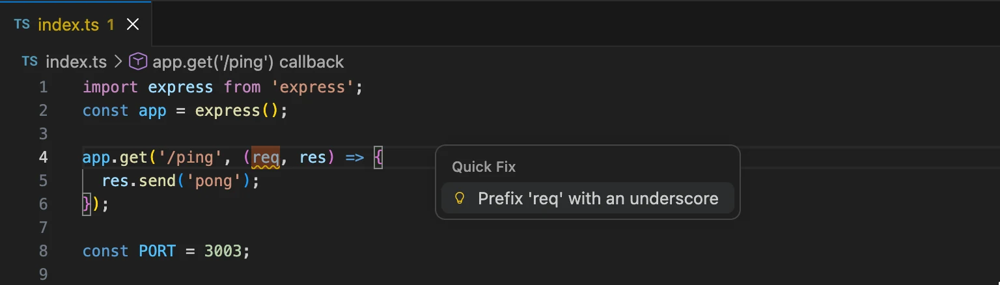
إذا كان من المستحيل تماماً التخلص من متغير غير مستخدم، يمكنك أن تسبقه بشرطة سفلية لإبلاغ المترجم بأنك فكّرت في الأمر ولا شيء يمكنك فعله.
لنُعِد تسمية المتغير req إلى _req.
أخيراً، أصبحنا مستعدين لبدء التطبيق. يبدو أنه يعمل بشكل جيد:
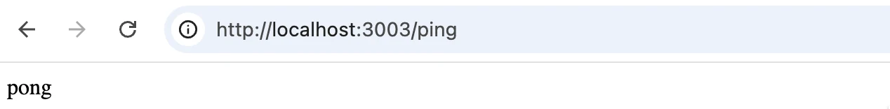
لتبسيط عملية التطوير، ينبغي تمكين إعادة التحميل التلقائي. لقد استخدمت node --watch سابقاً في هذا المقرر،
يمكننا تجربة ما يلي:
{
// ...
"scripts": {
// ...
"dev": "tsc && node --watch index.ts",
},
// ...
}
ومع ذلك، هذا لا يعمل تماماً. إذ يجري فحص الأنواع في البداية فقط. وأحد الحلول سيكون تشغيل فحص الأنواع وNode في وضع المراقبة في الوقت نفسه. وهذا سهل باستخدام حزمة npm المسماة concurrently. لنثبّتها:
npm install --save-dev concurrently
أضف سكربتاً إلى package.json:
"scripts": {
"tsc": "tsc",
"multiply": "tsc && node multiplier.ts",
"calculate": "tsc && node calculator.ts",
// BEGIN HIGHLIGHT
"start": "node index.ts",
"dev": "concurrently \"tsc --watch\" \"node --watch index.ts\""
// END HIGHLIGHT
},
أصبح npm start الآن أبسط، ويُفترض أن فحص الأنواع يجري قبل تشغيل الشيفرة.
والآن، بتشغيل npm run dev, لدينا بيئة تطوير عاملة تعيد التحميل تلقائياً لمشروعنا! ومع ذلك، هناك أمر واحد جدير بالملاحظة. إذا أُدخل خطأ في الأنواع إلى البرنامج، يلاحظه فاحص الأنواع، لكن التطبيق يستمر في العمل، لذا عليك أن تراقب ما يحدث في الطرفية:
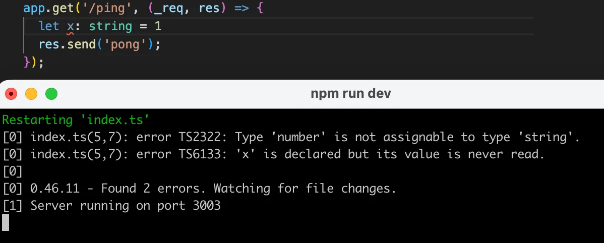
هناك أيضاً إعدادات من شأنها إيقاف البرنامج عن العمل في حال حدوث خطأ في الأنواع. لكننا نفضّل نهجاً أخف.
الاتجاه الحالي هو الاعتماد إلى حد كبير على المحرّر في فحص الأنواع أثناء كتابة الشيفرة، وتشغيل tsc --noEmit في خط أنابيب التكامل المستمر أو كخطاف Git pre-commit. هذا يبقي حلقة التطوير خفيفة. فـ node --watch src/index.ts يشغّل شيفرتك عند الحفظ فقط، بينما يعرض المحرّر أخطاء الأنواع في الوقت الفعلي. ويظل أمان الأنواع مفروضاً، لكن في اللحظات المهمة فقط بدلاً من إعاقة كل تشغيل.
4. Express
5. WebBmi
أهوال any
الآن بعد أن أكملنا أولى نقاط النهاية لدينا، قد تلاحظ أننا بالكاد استخدمنا أي شيء من TypeScript في هذه الأمثلة الصغيرة. وعند فحص الشيفرة عن قرب أكثر، يمكننا رؤية بعض المخاطر الكامنة فيها.
لنضف نقطة نهاية HTTP POST المسماة calculate إلى تطبيقنا:
import { calculator } from './calculator.ts';
app.use(express.json());
// ...
app.post('/calculate', (req, res) => {
const { value1, value2, op } = req.body;
const result = calculator(value1, value2, op);
return res.send({ result });
});
لجعل هذا يعمل، علينا إضافة export إلى الدالة calculator:
export const calculator = (a: number, b: number, op: Operation) : number => {
عندما تمرّر المؤشر فوق الدالة calculate، يمكنك رؤية أنواع calculator حتى مع أن الشيفرة نفسها لا تحتوي على أي كتابة أنواع:
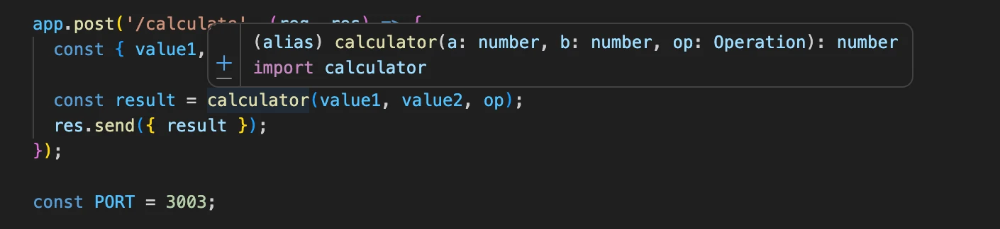
لكن إذا مرّرت المؤشر فوق القيم المستخرجة من الطلب، تظهر مشكلة:
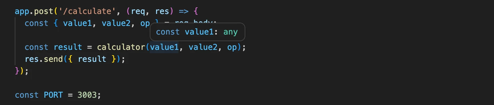
جميع المتغيرات من النوع any. وهذا ليس مفاجئاً كثيراً، إذ لم يمنحها أحد نوعاً بعد. وهناك بضع طرق لإصلاح ذلك، لكن أولاً، علينا التفكير في سبب قبول هذا ومن أين جاء النوع any.
في TypeScript، يصبح كل متغير غير منمّط يتعذّر استنتاج نوعه ضمنياً من النوع any. وany نوع يشبه "بطاقة جامحة"، يمثل أي نوع. وتصبح الأشياء من نوع any ضمنياً في كثير من الأحيان عندما ينسى المرء كتابة أنواع الدوال.
يمكننا أيضاً كتابة الأنواع any صراحةً. والفرق الوحيد بين النوع any الضمني والصراحي هو شكل الشيفرة؛ فلا يهتم المترجم بالفرق.
لكن المبرمجين يرون الشيفرة بشكل مختلف عندما يُفرض any صراحةً عما عندما يُستنتج ضمنياً. وعادة ما تُعتبر كتابات any الضمنية مشكلة لأنها كثيراً ما تكون بسبب نسيان المبرمج إسناد الأنواع (أو تكاسله عن ذلك)، وتعني أيضاً أن قوة TypeScript الكاملة لا تُستغل استغلالاً صحيحاً.
لهذا السبب توجد قاعدة الإعدادات noImplicitAny على مستوى المترجم، ويوصى بشدة بإبقائها مفعّلة في جميع الأوقات. وفي المناسبات النادرة التي لا يمكنك فيها حقاً معرفة نوع متغير ما، ينبغي أن تذكر ذلك صراحةً في الشيفرة:
const a : any = /* no clue what the type will be! */.
لدينا بالفعل noImplicitAny: true مضبوط في مثالنا، فلماذا لا يشتكي المترجم من أنواع any الضمنية؟ السبب هو أن حقل body في كائن Request الخاص بـ Express منمّط صراحةً بـany. وينطبق الشيء نفسه على حقل request.query الذي يستخدمه Express لمعاملات الاستعلام.
ملاحظة حول الاستيراد
إذا نظرت بدقة إلى الشيفرة، لاحظت على الأرجح أن الاستيراد يستخدم اسم الملف الكامل بما في ذلك الامتداد:
import { calculator } from './calculator.ts';
وذلك لأن Node.js يحتاج إلى التمييز بين الملف المصدر .ts وملف .js المترجم المحتمل بالاسم نفسه، رغم أننا في حالتنا لن نملك حتى ملفات .js.
ماذا لو أردنا تقييد المطورين من استخدام النوع any؟ لحسن الحظ، لدينا طرق غير tsconfig.json لفرض أسلوب كتابة الشيفرة. ما يمكننا فعله هو استخدام ESlint لإدارة شيفرتنا. لنثبّت ESlint وإضافاته الخاصة بـ TypeScript:
npm install --save-dev eslint @eslint/js typescript-eslint
ملاحظة: في وقت كتابة هذا النص (28.3.2026)، فإن أحدث إصدار من typescript-eslint (وهو 5.57.2) غير متوافق مع TypeScript 6، الذي صدر في 23.3.2026. وبسبب ذلك، يفشل الأمر
npm install. وإلى أن يصدر إصدار جديد، عليك تشغيل الأمر بالصيغةnpm install --legacy-peer-deps
سنضبط ESlint على منع any الصراحي. اكتب القواعد التالية في eslint.config.mjs:
import eslint from '@eslint/js';
import tseslint from 'typescript-eslint';
export default tseslint.config({
files: ['**/*.ts'],
extends: [
eslint.configs.recommended,
...tseslint.configs.recommendedTypeChecked,
],
languageOptions: {
parserOptions: {
project: true,
tsconfigRootDir: import.meta.dirname,
},
},
rules: {
'@typescript-eslint/no-explicit-any': 'error',
},
});
لنُعِد أيضاً سكربت npm باسم lint لفحص الملفات عبر تعديل ملف package.json:
{
// ...
"scripts": {
"tsc": "tsc",
"calculate": "tsc && node calculator.ts",
"multiply": "tsc && node multiplier.ts",
"start": "node index.ts",
"dev": "concurrently \"tsc --watch\" \"node --watch index.ts\"",
"lint": "eslint ." // HIGHLIGHT LINE
// ...
},
// ...
}
الآن سيشكو lint إذا حاولنا تعريف متغير من النوع any:
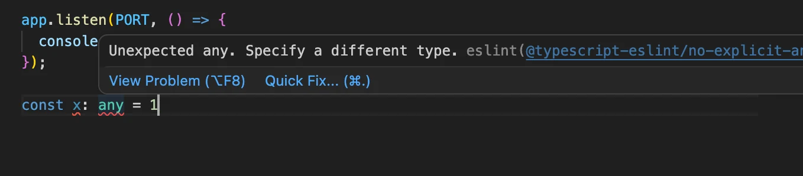
لدى typescript-eslint الكثير من قواعد ESLint الخاصة بـ TypeScript، لكن يمكنك أيضاً استخدام جميع قواعد ESLint الأساسية في مشاريع TypeScript. في الوقت الحالي، ينبغي أن نمضي غالباً مع الإعدادات الموصى بها، وسنعدّل القواعد أثناء تقدمنا كلما وجدنا شيئاً نريد تغيير سلوكه.
علاوة على الإعدادات الموصى بها، ينبغي أن نحاول التعرّف على أسلوب كتابة الشيفرة المطلوب في هذا الجزء وجعل الفاصلة المنقوطة في نهاية كل سطر شيفرة مطلوبة. ولذلك، ينبغي أن نثبّت ونضبط @stylistic/eslint-plugin:
npm install --save-dev @stylistic/eslint-plugin
يبدو ملفنا النهائي eslint.config.mjs كما يلي:
import eslint from '@eslint/js';
import tseslint from 'typescript-eslint';
import stylistic from "@stylistic/eslint-plugin";
export default tseslint.config({
files: ['**/*.ts'],
extends: [
eslint.configs.recommended,
...tseslint.configs.recommendedTypeChecked,
],
languageOptions: {
parserOptions: {
project: true,
tsconfigRootDir: import.meta.dirname,
},
},
plugins: {
"@stylistic": stylistic,
},
rules: {
'@stylistic/semi': 'error',
'@typescript-eslint/no-unsafe-assignment': 'error',
'@typescript-eslint/no-explicit-any': 'error',
'@typescript-eslint/explicit-function-return-type': 'off',
'@typescript-eslint/explicit-module-boundary-types': 'off',
'@typescript-eslint/restrict-template-expressions': 'off',
'@typescript-eslint/restrict-plus-operands': 'off',
'@typescript-eslint/no-unused-vars': [
'error',
{ 'argsIgnorePattern': '^_' }
],
},
});
هناك عدد لا بأس به من الفواصل المنقوطة المفقودة، لكن إضافتها سهلة. وعلينا أيضاً حل مشكلات ESLint المتعلقة بنوع any:
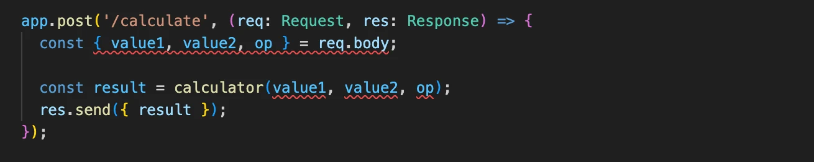
يمكننا، بل ينبغي لنا على الأرجح، تعطيل بعض قواعد ESlint للحصول على البيانات من جسم الطلب.
تعطيل @typescript-eslint/no-unsafe-assignment من أجل إسناد التفكيك واستدعاء دالة بناء Number على القيم يكاد يكون كافياً:
app.post('/calculate', (req, res) => {
// BEGIN HIGHLIGHT
// eslint-disable-next-line @typescript-eslint/no-unsafe-assignment
const { value1, value2, op } = req.body;
// END HIGHLIGHT
const result = calculator(Number(value1), Number(value2), op); // HIGHLIGHT LINE
return res.send({ result });
});
لكن هذا لا يزال يترك مشكلة واحدة للتعامل معها، وهي أن المعامل الأخير في استدعاء الدالة غير آمن:
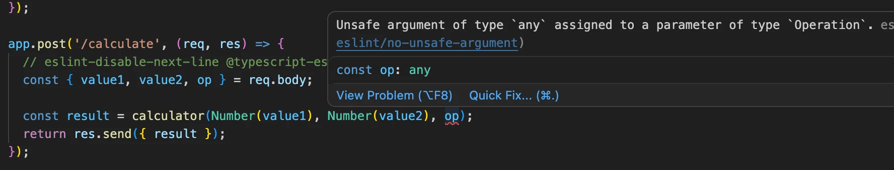
يمكننا فقط تعطيل قاعدة ESlint أخرى للتخلص من ذلك:
app.post('/calculate', (req, res) => {
// eslint-disable-next-line @typescript-eslint/no-unsafe-assignment
const { value1, value2, op } = req.body;
// BEGIN HIGHLIGHT
// eslint-disable-next-line @typescript-eslint/no-unsafe-argument
// END HIGHLIGHT
const result = calculator(Number(value1), Number(value2), op);
return res.send({ result });
});
لقد أسكتنا ESlint الآن، لكننا تحت رحمة المستخدم تماماً. ينبغي بالتأكيد أن نجري بعض التحقق على بيانات POST ونعطي رسالة خطأ مناسبة إذا كانت البيانات غير صالحة:
app.post('/calculate', (req, res) => {
// eslint-disable-next-line @typescript-eslint/no-unsafe-assignment
const { value1, value2, op } = req.body;
// BEGIN HIGHLIGHT
if ( !value1 || isNaN(Number(value1)) ) {
return res.status(400).send({ error: '...'});
}
// المزيد من عمليات التحقق هنا...
// END HIGHLIGHT
// eslint-disable-next-line @typescript-eslint/no-unsafe-argument
const result = calculator(Number(value1), Number(value2), op);
return res.send({ result });
});
سنرى لاحقاً في هذا الجزء بعض التقنيات التي يمكن بها تضييق البيانات من النوع any (مثل المدخلات التي يستقبلها التطبيق من المستخدم) إلى نوع أكثر تحديداً (مثل number). ومع التضييق الصحيح للأنواع، لن تبقى هناك حاجة لإسكات قواعد ESlint.
تحذير
كثيراً ما يفقد VS code تتبّع ما يجري فعلاً في الشيفرة ويعرض تحذيرات متعلقة بالأنواع أو الأسلوب رغم إصلاح الشيفرة. إذا حدث هذا (وقد حدث معي كثيراً)، فأغلق الملف الذي يسبب لك المشكلة وافتحه، أو أعد تشغيل المحرّر فقط. ومن الجيد أيضاً التأكد مرتين من أن كل شيء يعمل فعلاً بتشغيل المترجم وESlint من سطر الأوامر بالأمرين:
npm run tsc npm run lint
فعند التشغيل من سطر الأوامر تحصل على "النتيجة الحقيقية" بالتأكيد. لذا، لا تثق بالمحرّر كثيراً أبداً!
تأكيد النوع
استخدام تأكيد النوع هو "حيلة ملتوية" أخرى يمكن القيام بها لإبقاء مترجم TypeScript وEslint صامتين. لنصدّر النوع Operation في calculator.ts:
export type Operation = 'multiply' | 'add' | 'divide';
الآن يمكننا استيراد النوع واستخدام تأكيد النوع as لإخبار مترجم TypeScript بنوع المتغير:
import { calculator, type Operation } from './calculator'; // HIGHLIGHT LINE
// ...
app.post('/calculate', (req: Request, res: Response) => {
// eslint-disable-next-line @typescript-eslint/no-unsafe-assignment
const { value1, value2, op } = req.body;
if ( !value1 || isNaN(Number(value1)) ) {
return res.status(400).send({ error: '...'});
}
const operation = op as Operation; // HIGHLIGHT LINE
const result = calculator(Number(value1), Number(value2), operation); // HIGHLIGHT LINE
return res.send({ result });
});
لاحظ أننا استوردنا النوع Operation باستخدام الكلمة المفتاحية type:
import { calculator, type Operation } from './calculator';
وهذا مطلوب لأننا نشغّل الشيفرة مباشرةً بـ Node.js، الذي يزيل أنواع TypeScript وقت التشغيل، لذا يجب وسم أي استيرادات للأنواع فقط بهذا الشكل صراحةً.
أصبح للمتغير المعرّف operation الآن نوع Operation، والمترجم راضٍ تماماً، ولا حاجة لإسكات قاعدة Eslint في استدعاء الدالة التالي. وفي الواقع، المتغير الجديد غير مطلوب، إذ يمكن إجراء تأكيد النوع عند تمرير وسيط إلى الدالة:
app.post('/calculate', (req: Request, res: Response) => {
// eslint-disable-next-line @typescript-eslint/no-unsafe-assignment
const { value1, value2, op } = req.body;
// التحقق من البيانات هنا
const result = calculator(Number(value1), Number(value2), op as Operation); // HIGHLIGHT LINE
return res.send({ result });
});
استخدام تأكيد النوع (أو إسكات قاعدة ESLint) ينطوي دائماً على بعض المخاطرة. فهو يُعفي مترجم TypeScript من المسؤولية، ويثق المترجم فقط بأننا، كمطورين، نعرف ما نفعله. وإذا لم يكن للنوع المؤكَّد القيمة الصحيحة، ستكون النتيجة خطأ وقت التشغيل، لذا يجب أن يكون المرء حذراً جداً عند التحقق من البيانات إذا استُخدم تأكيد النوع.
في الفصل التالي، سنلقي نظرة على تضييق الأنواع الذي سيوفر طريقة أكثر أماناً بكثير لإعطاء نوع أكثر صرامة للبيانات القادمة من مصدر خارجي.
6. Eslint
7. WebExercises
8. Checkup